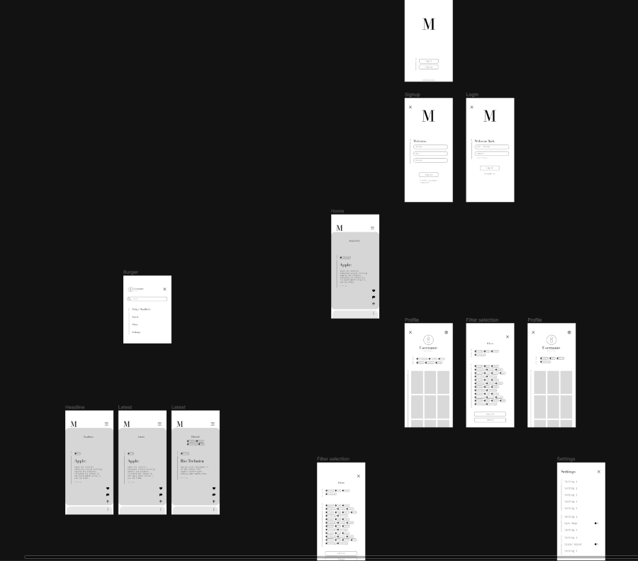
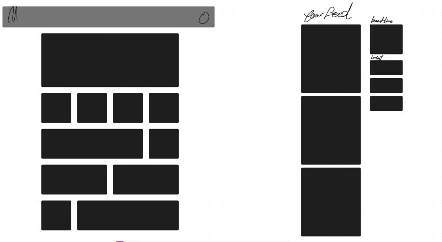
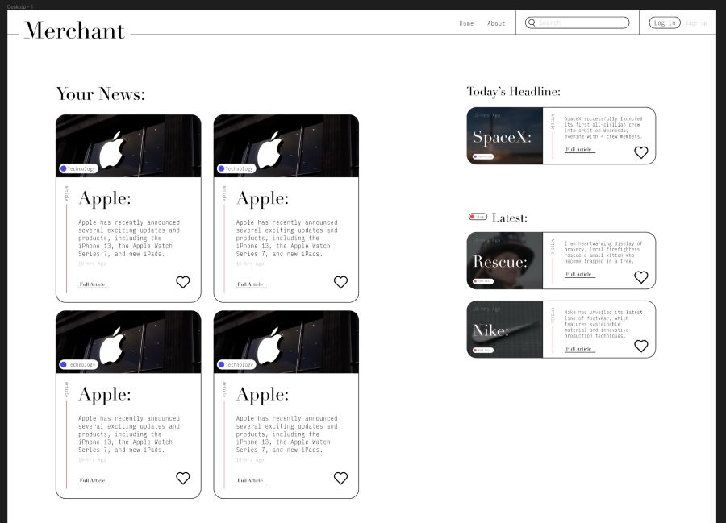
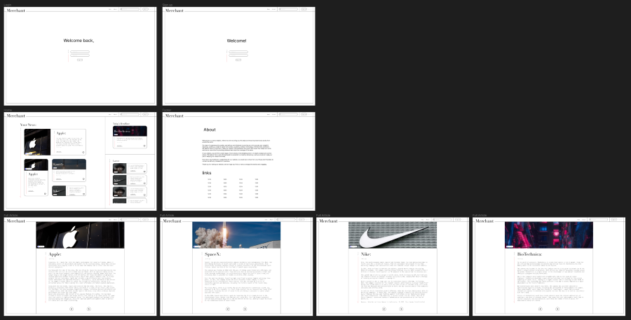
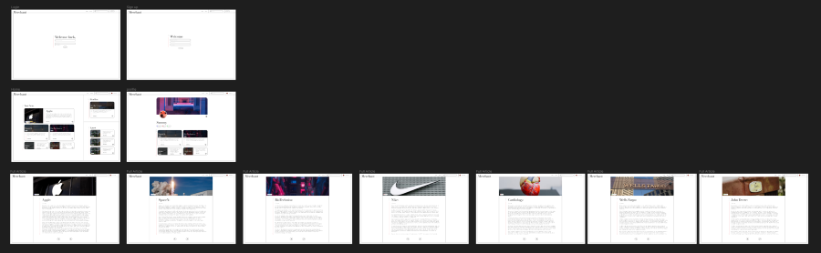

After making the paper prototype and getting some feed back from users. I started to make turn those suggested changes from paper to digital prototypes.
But after playing around with the digital lofi prototype the concept of the solution slowly started to change and evolve. It started off as a tik tok like format to make not liking how things were placed and then it slowly started to change in to a card like format. With this new format but still the same content. I mapped out what i wanted the new website to look like. It could have been from a simple website layout of having cards placed in a generic manner. Or i could also have gone, still a similer tik toc style of having the main content in a scrollable format like how the tik toks website it.
In the end ive decided to do a mash between these two. There would be a main scrollable section in a grid format and on the side there would be the latest and head lines section. The main section would be dedicated to the content for the viewer or what the website thinks the viewer would like.
I laid out the content too see if i liked the layout of the new design with the new cards and it turned out to look like a design website.
When i did that i realized that the original idea didnt have a good identity for it because it was so based off of tik tok.
I moved onto creating a mid-fi prototype and fully creating a news dashboard. Ive created 2 version of the but essentially its just the same thing with different pages. I did this to see how things would look.
 After creating both i just scrapped the first one in favour of the on with the most articles and profile. this is mainly because the overall design of the website since i wasnt planning on having a footer at the bottom of the page, but instead having the footer in the about page. Yes having the the about page for a ready to test prototype would be me crossing my eyes and dotting my Ts but i thought not having it would be a better representation of how the website would be for the target audience because there wouldnt be any need to have an about us because they might just not be interested in it at all.